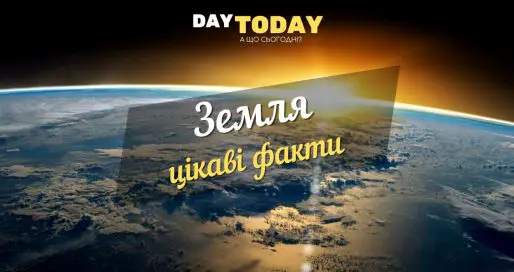
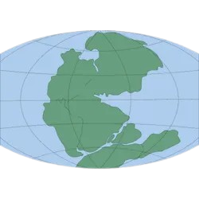
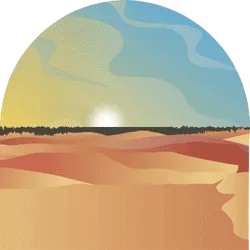
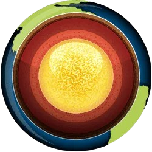
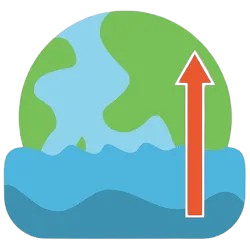
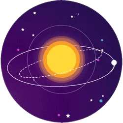
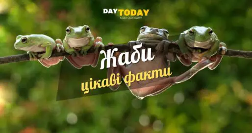

Цікаві факти
Цікаві факти про фортепіано
Щорічно у 88-й день року відзначають Всесвітній день фортепіано
(World Piano Day). Пропонуємо вам дослідити цікаві факти про
фортепіано, про цей старовинний і чарівний інструмент.
Слово “Piano” означає “повільно”, “тихо”, “м’який звук/музика”.
Спочатку термін “Piano” означав тиху музику, а не сам інструмент.
-
Фортепіано – це загальна назва групи інструментів, яка
складається з двох різновидів – роялів і піаніно.
-
Прямими предками фортепіано були клавесини і клавікорди. Але
головним недоліком цих музичних інструментів було швидко
загасаюче звучання і дуже низький рівень гучності.
-
Батьком фортепіано заведено вважати італійського клавесинного
майстра Бартоломео Крістофорі. Дата народження інструменту точно
не встановлена, але вважають, що вона знаходиться в межах 1709 –
1711 рр.
-
Винахідник фортепіано Крістофорі також винайшов спінеттоне.
Працюючи на родину Медічі, Крістофорі також розробив спінет,
перетворивши його на спінеттон, варіант клавесина.
-
Тосканська королівська родина Медічі фінансувала винайдення
фортепіано
-
Тосканський принц Фердінандо Медічі підтримував Крістофорі, що
призвело до винайдення фортепіано.
- Фортепіано – нащадок старовинного інструмента органу.
-
Предки фортепіано, такі як клавесин і клавікорд, походять від
органу, витоки якого сягають часів Римської імперії.
-
Рояль має більшу швидкодію, ніж вертикальні фортепіано (Спінет,
піаніно) завдяки механізму репетиції. Він дозволяє піаністу
повторювати ноту, при неповному відпуску клавіші. Вертикальний
варіант механіки фортепіано вимагає повного повернення клавіші
для повторного дії молоточка.
-
Соната Людовіко Джустіна – перший музичний твір, написаний для
фортепіано. Сталася це подія в 1732 році.
- Перші роялі мали прямокутну форму.
-
Технологічно, фортепіано вважаються найскладнішими для
виготовлення інструментами. Вони складаються з 10000 рухомих
деталей і 2000 нерухомих.
- На 75% піаніно і роялі складаються з дерева.
-
При виготовленні струн, крім інших матеріалів, використовували
срібло, золото, скло і шовк.
-
Спочатку клавіші фортепіано робили зі слонової кістки, але
згодом були замінені на пластикові.
-
Найстаріше зі збережених фортепіано датується 1720-м роком і
експонується в Метрополітен-музеї (Нью-Йорк).
-
Унікальність фортепіано полягає в тому, що його можливості
охоплюють весь спектр звучання інструментів оркестру: від
верхньої ноти флейти до низької ноти басового фагота.
-
Перша нота на стандартній 88-клавішній клавіатурі – «ля»
субконтроктави. Середина клавітатури – проміжок між «ми» і «фа»
першої октави. Остання нота на клавіатурі – «до» п’ятої октави.
-
Перший інструмент, на якому «навчили грати» робота – було
фортепіано. При цьому музичним увертюрам робота навчили раніше,
ніж грі в шахи.
-
Виробництво фортепіано у світі вважалося прерогативою невеликих
фірм і майстерень. В СРСР виготовлення інструментів було
поставлене на конвеєр. У 1955 році на Чернігівщині на фабриці
музичних інструментів був запущений перший в країні конвеєр зі
зборки клавішних музичних інструментів – кожні 12 хвилин з
100-метрової конвеєрної стрічки сходило нове піаніно «Україна».
-
Вважається, що вібрація корабельних двигунів при транспортуванні
негативно позначається на акустичних властивостях інструментів.
Саме тому перевезення дорогих моделей роялів довіряли виключно
вітрильним судам.
-
Більшість роялів мають 88 клавіш. Однак, для музикантів, яким
недостатньо наявного звукового діапазону, випускають інструменти
на 102 клавіші.
-
Довжина концертного рояля Bosendorfer Imperial – без малого 3
метри, його клавіатура має додаткові 9 клавіш в басах, нижня з
яких – «до» – на октаву нижче «до» контроктави. Концертні роялі
трохи меншого розміру цієї ж фірми мають чотири додаткових
клавіші в басах, нижня – «фа» субконтроктави.
-
Дослідження, проведені в Німеччині, показали, що мозок піаністів
має більшу продуктивність. А у дітей, які займаються музикою
краща успішність в школі в порівнянні з однолітками, що не
займаються нічим, крім навчання в школі.
-
Традиційно найбільший конкурс на навчання у музичних школах саме
на фортепіано.
-
У розвинених країнах у кожній п’ятій родині було (або є)
фортепіано.
-
У світі налічується понад два десятки пам’ятників фортепіано.
-
Ямаха почала виготовляти фортепіано в 1887 році, першою в
Японії.
-
За час існування фортепіано було безліч спроб його
вдосконалення. Наприклад, деякі дерев’яні частини намагалися
замінити на пластмасові. Однак від ідеї відмовилися через дуже
обмежений термін служби таких деталей. Було багато й інших не
дуже вдалих спроб. Серед них – фортепіано Йенсена з двома
клавіатурами, вертикальне, фортепіано з клавіатурою, схожою на
клавіатуру друкарської машинки тощо.
-
Спочатку синтезатор називали електронним (цифровим) піаніно.
-
Попри те, що піаніно – це струнний інструмент, його помістили в
розділ ударних симфонічного оркестру.
21 цікавий факт про віскі
Віскі – це напій із багатою історією, який асоціюється з
традиціями, майстерністю витримки та глибокими ароматами. Його
пили королі та письменники, йому присвячували вірші та легенди.
Поговорімо про віскі не як про алкоголь, а як про культурний
феномен. Пропонуємо вам цікаві факти про віскі.
-
Вважається, що першими виробниками віскі були ірландські ченці.
Вони використовували солод та чисту воду для приготування напою.
Перша згадка про алкоголь датується 1405 роком, але очевидно,
про нього знали ще раніше. Здавна Шотландія та Ірландія
змагаються за право почесного звання батьківщини віскі.
-
У Шотландії віскі вперше згадується в реєстрі казначейства від 1
червня 1494 року, де зазначено про видачу солоду брату Джону
Кору для виготовлення «aqua vitae».
-
Обидва слова «Whiskey» і «Whisky» є правильними. Whiskey є
використовують для ірландського віскі, а Whisky – для
шотландського.У 1505 році Гільдія хірургів та цирульників
Единбурга отримала монополію на виробництво віскі, яке
продавалося в аптеках як лікувальний засіб.
-
На початку XVIII століття напій використовували у якості валюти.
Ним розраховувалися за послуги та продукти. Крім того, алкоголь
брав участь у приготуванні різних страв та лікуванні хворих.
Коли влада почала задумуватися про введення жорстких податків на
віскі, мешканцям Пенсільванії навіть довелося бунтувати проти
цього.
-
До 1915 року вважалося, що для якісної витримки солодового напою
достатньо 2 років. У 1916 прийняли офіційний закон, у якому
говорилося про мінімальний строк витримки віскі у дерев’яних
бочках – 3 роки. Під час «сухого закону» в Америці віскі був
єдиним алкоголем, дозволеним для продажу, але лише у якості
ліків.
-
90% всього солодового віскі (а існує близько 5 тисяч видів)
виготовляється у Шотландії. Кожної секунди у світі 30 людей
стають щасливими покупцями пляшки шотландського віскі. Саме
віскі з Шотландії є найпопулярнішим на полицях магазинів. Навіть
ірландський, канадський чи американський напій не зрівняється з
ним.
-
Експорт шотландського віскі на суму 4,91 мільярда фунтів
стерлінгів у 2019 році склав понад 20% від усього експорту
продуктів харчування та напоїв Великобританії.1
-
В алкоголь вкладають інвестиції й отримують близько 30% доходу
щомісяця. На спеціальній торговій біржі World Whisky Index люди
купують напій, отримують сертифікат власника і мають повне право
на перепродаж пляшки. Японія та Китай є основними користувачами
біржі.
-
Найдорожчий віскі The Macallan 80-річної витримки оцінювався у
460 тисяч доларів на аукціоні в Нью-Йорку у 2010 році. У 2006
році пляшку віскі 1926 року виготовлення продали за 54 тисячі.
Усі кошти, отримані з продажу, були переведені на благодійність.
-
У 2019 році 30-річна бочка Macallan встановила новий світовий
рекорд як найдорожча бочка віскі, коли-небудь продана на
аукціоні. За неї виручили – $572 000.1
-
Найпопулярнішими країнами, що спеціалізуються на виготовленні
віскі, є Шотландія, Ірландія, Америка, Японія та Канада.
Франція, хоч і вважається батьківщиною коньяку, також займається
виробництвом віскі. Назва на етикетці пляшки може вказати на
країну-виробника. Якщо «whisky», то це Шотландія, «whiskey» –
інша країна.
-
На субмаринах королівського флоту Британії поширена практика
жорсткого відбору кандидатів на звання офіцера. На борт
потрапляють лише найкращі. Ті, хто передчасно відсіявся з
відбору, отримують пляшку дорогого шотландського віскі за
сміливість та завзятість.
- Френка Сінатру поховали з пляшкою Jack Daniel’s
-
Невитримане американське віскі часто називають «білою собакою»
(white dog).
-
Нікола Тесла пив віскі щодня, бо вважав, що він допоможе йому
прожити до 150 років. Ну таке… прожив 86 років.
- Після розливу в пляшки віскі не старіє, як більшість вин.
- Більшість віскі виготовляють у бочках з-під бурбону.
- Односолодове віскі може зберігатися в декількох бочках.
-
Бочки можуть використовуватися до чотирьох разів у процесі
виготовлення шотландського віскі.
-
Шотландська порція віскі називається дрем. У барі дрем наливають
так, щоб було заповнене лише дно келиха. А під час посиденьок з
друзями кожен сам визначає для себе об’єм дрему. Взагалі це
широке поняття міри, яке цілком залежить від щедрості того, хто
пригощає.
-
Первинним смаком віскі насолоджуються у тюльпаноподібних
келихах. Така форма дозволяє вловити особливий деревний аромат
напою, який був настояний у бочці. Для дегустації використовують
також низькі та масивні склянки до 400 мл з товстим дном, які
називаються тумблери.
27 березня щороку відзначають Міжнародний день віскі
Всесвітній день віскі відзначається щорічно третьої суботи травня.
Також протягом року відзначають:
Міжнародний день ірландського віскі
Міжнародний день шотландського віскі
Чому напій назвали віскі?
Термін «віскі» походить від гельського «uisge beatha» або
«usquebaugh» – це означає «вода життя». Гельська мова – це гілка
кельтської мови, якою розмовляють у гірській місцевості Шотландії.
Однак, варто пам’ятати, що попри всю його благородність і довгу
історію, алкоголь залишається небезпечною речовиною, яка може
спричиняти залежність і шкодити здоров’ю. Насолоджуватися цікавими
фактами про віскі можна без шкоди для організму – просто
занурюючись у його захопливий світ без дегустації.
Цікаві факти про воду
Вода необхідна для всіх живих організмів. Чи то для того, щоб
залишатися зволоженими, розщеплювати їжу, виробляти енергію,
регулювати метаболізм або щоб допомагати рослинам рости — життя,
яким ми його знаємо, не могло б існувати без води. Вважається, що
воді на Землі понад 4,6 мільярда років, і вона сформувала планету
та її історію. У рідкому, твердому чи газоподібному стані вода є
неймовірною речовиною. Оскільки Всесвітній день водних ресурсів
відзначається 22 березня, давайте зануримося у цікаві факти про
воду.
Землю часто називають «блакитною планетою», що зумовлене її
величезними водними просторами. Однак 97% з них — це морська вода,
непридатна для вживання людьми. Тому вода – дефіцитний, дорогий і
дуже цінний ресурс на планеті.
Римська система акведуків змінила історію:
Хоча римляни не винайшли акведуки, вони розробили складну систему
водопостачання, яка дозволила їхній цивілізації процвітати.
Система акведуків, яку вважають інженерним дивом, складалася з
труб, тунелів, каналів і мостів. Вони змогли використати природний
рельєф місцевості, щоб максимізувати дію сили тяжіння. Це
дозволило римлянам ефективно спрямовувати воду в різні райони для
використання у лазнях, фонтанах, для зрошення та пиття. У період з
312 р. до н.е. по 226 р. н.е. було збудовано 11 акведуків, які
подавали воду до Риму з відстані майже 60 миль. У період свого
розквіту система акведуків забезпечувала водою майже 200 міст
Римської імперії.
Вода — це аномальна речовина
Більшість речовин у твердому стані щільніші, ніж у рідкому. Однак
твердий стан води — лід — може плавати на воді. Лід лежить на
поверхні води, створюючи ізоляційний бар’єр для водних організмів.
Якби він занурився, вода замерзла б, і життя не змогло б вижити.
Кругообіг води налічує 3,8 мільярда років
У найпростішому розумінні, кругообіг води на Землі — це
нескінченний процес, який пов’язує воду у всіх її різноманітних
формах. У 1580 році Бернар Паліссі розробив теорію кругообігу
води. Він вважав, що кількість води на Землі залишається
незмінною, хоча й перебуває в постійному русі, і що ті самі
молекули води, які утворилися мільярди років тому, постійно
переробляються. Процес кругообігу води відбувається через
випаровування, конденсацію та опади та впливає на географію Землі
та змінює її. Водна ерозія і танення льодовиків є невід’ємною
частиною створення таких форм рельєфу Землі, як долини й гірські
вершини. Вони також створюють льодовикові уламки — скелі та
валуни, які були переміщені льодовиками та відклалися в іншому
місці після танення льодовика.
Інші цікаві факти про воду
- Вода — найпоширеніша речовина на Землі.
-
Вода — єдина речовина, яка зустрічається в природі у трьох
формах: твердій, рідкій та газовій.
-
Майже 97 відсотків води у світі є солоною або непридатною для
пиття. Ще 2 відсотки замкнені в крижаних шапках і льодовиках.
Залишається лише 1 відсоток для всіх потреб людства —
сільськогосподарських, житлових, виробничих, громадських та
особистих потреб.
-
Менше 1% води, очищеної комунальними водоканалами,
використовується для пиття і приготування їжі.
-
Молекула води зберігається в океані 98 років, у льоду – 20
місяців, а в озерах і річках — два тижні.
-
Вода регулює температуру Землі. Вона також регулює температуру
людського тіла, переносить поживні речовини, захищає органи й
тканини, виводить відходи життєдіяльності.
-
Вода становить 83% нашої крові, 75% мозку і 90% легенів. Людські
кістки на 31% складаються з води. Загалом, наше тіло на 70
відсотків складається з води.
-
Помідор складається приблизно на 95% з води. Яблуко, ананас і
качан кукурудзи складаються на 80 відсотків з води. Живе дерево
складається приблизно на 75 відсотків з води.
- Один акр кукурудзи випаровує 15 000 літрів води на день.
-
Людина може прожити близько місяця без їжі, але лише близько
тижня без води.
-
Близько 25 700 літрів води потрібно для вирощування їжі на один
день для сім’ї з чотирьох осіб.
-
За оцінками, 790 мільйонів людей (11% населення світу) живуть
без доступу до якісного водопостачання. До 2025 року 1,8
мільярда людей будуть жити в країнах або регіонах з абсолютним
дефіцитом води, а дві третини населення світу можуть жити в
умовах водного стресу.
-
У середньому жінки в країнах, що розвиваються, проходять 6
кілометрів на день, щоб набрати води. Лише в Африці жінки
витрачають 40 мільярдів годин на рік, ходячи по воду.
-
Вода в пляшках може бути у 2000 разів дорожчою за водопровідну і
не такою безпечною. У 1998 році Національна рада США з охорони
ресурсів завершила 4-річне тестування 103 пляшок води та
виявила, що 1/3 з них містила бактерії та інші хімічні речовини
на рівнях, що перевищують промислові стандарти.
-
Ультрафіолетове світло може знищити 99,99% шкідливих
мікроорганізмів (бактерій, вірусів, цист) у воді, щоб зробити
воду безпечною для пиття. Це безпечна вода без хімікатів для
покращення побутової води.
-
На громадське водопостачання припадає близько 14% від загального
обсягу вилучення прісної води.
-
Спрага гарантує, що істоти підтримують баланс води та поживних
речовин, таких як натрій, які є життєво важливими для здорового
функціонування клітин.
-
Маловідомий факт, але недостатнє споживання води насправді є
фактором ризику різних видів раку. Гідратація має вирішальне
значення для кровообігу, оскільки дозволяє клітинам імунної
системи досягати пошкоджених тканин у більшій кількості.
-
Чиста вода (тільки атоми водню і кисню) має нейтральний рН 7,
тобто не кислий і не лужний.
-
Забруднення підземних вод майже завжди є результатом людської
діяльності.
-
Вода розчиняє більше речовин, ніж будь-яка інша рідина. Куди б
вона не рухалася, вода переносить з собою хімічні речовини,
мінерали та поживні речовини.
-
Прісноводні тварини зникають швидше, ніж ті, що живуть на суші
чи в морі.
-
За даними Агентства з охорони навколишнього середовища, вплив
свинцю пов’язаний із затримкою фізичного розвитку та
поведінковими проблемами. Ви можете видалити 98% свинцю у воді
за допомогою системи зворотного осмосу питної води.
-
Вага, яку людина втрачає безпосередньо після інтенсивних
фізичних навантажень, — це вага з води, а не з жиру.
-
При народженні вода становить приблизно 80 відсотків ваги тіла
немовляти.
-
Молекула води має високу когезію — вона дуже липка, тобто
молекули води прилипають одна до одної. Вода є найбільш
когезійною серед неметалічних рідин. Молекули води також є
адгезійними, тобто прилипають до інших поверхонь. І когезія, і
адгезія роблять молекули води дуже липкими.
-
Чиста вода, яку ви ніколи не знайдете в природному середовищі,
не проводить електричний струм. Вода стає провідником, коли
починає розчиняти речовини навколо себе.
-
Вода має високий тепловий індекс — вона поглинає багато тепла,
перш ніж почне нагріватися. Ось чому вода є цінною для
промисловості та в радіаторі вашого автомобіля як охолоджуюча
рідина. Високий тепловий індекс води також допомагає регулювати
швидкість, з якою повітря змінює температуру, тому зміна
температури між сезонами відбувається поступово, а не раптово,
особливо поблизу океанів.
-
Вода має дуже високий поверхневий натяг. Іншими словами, вода є
липкою та еластичною і має тенденцію злипатися в краплі, а не
розтікатися тонкою плівкою, як медичний спирт. Поверхневий натяг
відповідає за капілярну дію, яка дозволяє воді (і розчиненим у
ній речовинам) рухатися через коріння рослин і крихітні
кровоносні судини в нашому тілі.
-
Тиск повітря впливає на температуру кипіння води, саме тому в
горах яйце вариться довше, ніж на пляжі. Чим вище над рівнем
моря, тим нижчий атмосферний тиск, тим нижча температура кипіння
води, а отже, тим більше часу потрібно для того, щоб зварити
яйце. На рівні моря вода закипає при температурі 100°С, а на
висоті 1500 метрів — при 94,9°C.
-
Вода є не лише на Землі. Астрономи виявили, що на деяких
супутниках Юпітера та Сатурна існують підповерхневі океани. Що
цікаво, найбільший об’єм води у Всесвіті був знайдений навколо
чорної діри за 12 мільярдів світлових років від нас – він у 140
трильйонів разів перевищує запаси земних океанів!1
Цікаві факти про татуювання
У різних культурах ставлення до татуювань було і залишається
різним. У Стародавньому Єгипті, наприклад, мати їх могли тільки
представники вищого стану, а в Японії і по сьогодні татуювання
асоціюються з якудза і іншим кримінальним світом. Людей з
татуюваннями на відкритих частинах тіла в цій країні часто не
пускають в пристойні місця, причому навіть іноземців. Хоча півтори
тисячі років тому в тій же Японії татуювання були імператорським
привілеєм.
Тату і боді-арт в цілому мають довгу історію становлення і
формування. Протягом всього часу накопичилося багато цікавих
випадків, фактів і подій, якими ми вирішити поділитися з вам до
Всесвітнього дня татуювання.
У вісімнадцятому столітті, коли мандрівник Джеймс Кук здійснив
свою подорож на Таїті, він привіз до Європи мешканця острова, тіло
якого було повністю прикрашено різними малюнками. Вважається, що
саме після цього випадку європейці почали так цікавитися
натільними малюнками.
Тату-індустрія в сучасному світі величезна, особливо в країнах
Заходу. В одних Сполучених Штатах населення щорічно витрачає понад
півтора мільярда доларів в тату-салонах, і це лише офіційна
статистика.
Деякі бренди практикують татуювання як спосіб реклами. Наприклад,
компанія Гарлі-Девідсон дає знижку всім покупцям, на тілі яких
присутній їх логотип чи назва.
Мистецтво татуювання було відомо ще стародавнім людям. Археологам
вдалося виявити примітивні інструменти для їх нанесення на тіло,
датовані десятим тисячоліттям до нашої ери. Нашим предкам
татуювання теж були відомі, найстарішим згадками про них – близько
півтори тисячі років.
Одні з найдавніших тату-традицій і донині існують в Новій
Зеландії. Маорі, корінні новозеландці, вже багато століть часто
покривають татуюваннями все тіло. Раніше ці візерунки на шкірі
розкривали коротку біографію власника і були знаком його статусу,
сьогодні ж це скоріше данина традиції.
А ось в Стародавній Греції і Стародавньому Римі ставлення до
татуювань було негативним. Ними мітили небезпечних злочинців, щоб
ті не могли сховатися, якщо їм вдасться втекти. Причому наносили
татуювання безпосередньо на обличчя.
Сучасні тату-машинки майже не ушкоджують шкіру, але традиційні
методи нанесення татуювань часто бувають дуже травматичні. Деякі з
них фактично поєднані зі шрамуванням. Дехто, втім, вважає, що це
додає малюнку об’єму.
Відомо, що бажання зробити тату може бути відображення внітрішніх
психологічних потреб людини, на які вона хоче звернути увагу. Це
може бути прагнення до свого коріння, спроба побороти свої страхи
чи інтегрувати тіньові структури. Саме тому, вирішивши ці питання,
або перейшовши до наступного етапу розвитку, люди часто
намагаються позбавитися татуювань. Адже вони вже не відповідають
їх психологічному стану.
Американець Джордж Рейнджер, колекціонує на своєму тілі татуювання
із зображенням героїв діснеївських мультиків. На його животі
розташована русалонька, на спині – Алладін, а в паху – 101
далматинець. Усього на його тілі налічується близько 500
мультиплікаційних героїв.
Згідно з американською статистикою, жінки частіше роблять
татуювання, ніж чоловіки, але при цьому вони також частіше їх і
зводять за допомогою лазера. Близько 23% американських жінок
носять на своєму тілі хоча б одне татуювання, в той час як
відсоток татуйованих чоловіків сягає всього лише 19%.
Не буває тимчасових татуювань. Татуювання можна звести, але це
складний, дорогий і болючий процес, до того ж без гарантованого
результату. Та й шрами після нього все одно можуть залишитися.
Чорні пігменти – найлегші для видалення за допомогою лазера.
Чорний колір поглинає більше лазерних променів, ніж будь-який
інший колір, що дозволяє більш ефективно руйнувати пігмент.
Найскладнішими кольорами для видалення є зелені та жовті відтінки.
Існує кілька видів виведення татуювань: хімічний – за допомогою
хімічних речовин; термічний – за допомогою лазера; механічний –
шляхом зрізання верхніх шарів шкіри.
Цікаво, що багато відомих людей мали татуювання, хоча цей факт
зазвичай не афішується.Так, татуювання були у видатного вченого
Альберта Ейнштейна і знаменитого політика Уінстона Черчилля
Буддійські монахи в деяких країнах активно покривають свої тіла
татуюваннями. У Таїланді багато з них мають безліч традиційних
візерунків на тілі. Причому традиційні тайські татуювання, відомі,
як “сак янт”, відповідно до звичаїв наносяться тільки в
монастирях. Сучасні тайські тату-салони відмовляються татуювати
сак янт клієнтам, якщо дорожать своєю репутацією і поважають
традиції.
Тату та психологія
Татуювання – це не просто малюнок на тілі, а важливий
психологічний маркер, який може багато розповісти про людину, це
ще один інструмент для дослідження свого внутрішнього світу або
іншої людини. Татуювання – це глибокий психологічний жест. Для
когось це естетика, спосіб самовираження, а для інших – символ
життєвого досвіду, болю або трансформації. Бажання зробити тату
нерідко є результатом глибоких внутрішніх процесів, які можуть
бути пов’язані з особистістю, самоідентичністю та навіть
травматичним досвідом.
Основні психологічні причини бажання зробити татуювання:
-
Самовираження та ідентичність
Людина може робити тату, щоб продемонструвати свою унікальність,
переконання, життєві цінності чи приналежність до певної
субкультури. Це спосіб заявити про себе, особливо якщо слова або
дії не дають бажаного ефекту.
-
Потреба у контролі над власним тілом
Деякі люди роблять татуювання після важких періодів у житті,
особливо коли почувалися безпорадними (наприклад, після хвороби,
розриву стосунків або втрати близької людини). Це свідомий вибір
– контроль над своїм тілом, що може допомогти відновити відчуття
власної сили, кордонів, тілесності тощо.
-
Пережитий травматичний досвід
Татуювання може символізувати певний біль або втрату, бути
способом “закрити” старі рани. Наприклад, люди, які пережили
травму, часто роблять тату як нагадування про свою витривалість
або як спосіб відновлення зв’язку зі своїм тілом.
-
Ритуал переходу
Багато культур використовують татуювання як символ певного
життєвого етапу. Сучасна людина також може робити тату, щоб
закріпити важливий момент у своєму житті – наприклад, народження
дитини, досягнення мети чи зміну світогляду. Імена, дати, цитати
– це саме про це.
-
Потреба у приналежності
Тут все буквально. Символіка татуювань часто пов’язана з
груповою ідентичністю: від спортивних команд до армії,
байкерських клубів чи релігійних груп. Вони дають відчуття
приналежності, братерства або єдності з іншими.
-
Психологічний захист або оберіг
Для багатьох татуювання – це не просто малюнок, а символічний
“амулет”, який дає відчуття захищеності. Це може бути зображення
ангела, руни, цитати або щось, що нагадує про силу та віру в
себе.
-
Залежність від гострих відчуттів або потреба проявити
почуття
Процес нанесення татуювання супроводжується болем, що може
викликати викид ендорфінів. Деякі люди можуть підсвідомо шукати
ці відчуття, що пояснює любов до великої кількості татуювань або
постійного оновлення малюнків на тілі. Це спосіб виведення
почуттів на зовні, прожиття душевного болю.
-
Психологічна компенсація
Іноді татуювання стає способом компенсувати власні страхи,
невпевненість або внутрішню порожнечу. Наприклад, хтось може
вибрати агресивний або войовничий малюнок, щоб приховати власну
вразливість. Деякі люди роблять татуювання з провокаційною або
нестандартною символікою, щоб виділятися, епатувати суспільство
або змусити оточення реагувати.
Все перераховане – не є поганим чи хорошим, це лише можливі
варіанти, щоб поставити собі питання: а для чого мені тату?
Звісно, лише якщо є бажання більше дізнатися про світ внутрішній
світ.
Зазвичай бажання татуювання – це природний прояв особистості, і в
ньому немає нічого тривожного. Наприклад, макіяж вже мало кого
бентежить, хоча теж багато говорить про особистість. Проте, якщо
людина робить татуювання імпульсивно, в стані емоційної кризи або
для того, щоб довести щось комусь, це може свідчити про глибші
проблеми – наприклад, про потребу у зовнішньому схваленні або
спробу впоратися з болем через фізичне втручання.
Цікаві факти про тюленів

Пропонуємо вам дослідити цікаві факти про тюленів. Ластоногі, яких
зазвичай називають тюленями, належать до різноманітної групи
напівводних морських ссавців, які демонструють дивовижну адаптацію
до навколишнього середовища. Ця група, що складається з 33 видів,
поділяється на три основні родини:
- моржі (єдиний представник родини моржових)
-
вухаті тюлені (Otariidae), які включають різні види морських
котиків і морських левів
- безвухі тюлені (Phocidae), або справжні тюлені.
Цікаві факти про тюленів
-
Тюлені існують уже мільйони років! Їхні предки оселилися в
океанах приблизно 28-30 мільйонів років тому. Вони
еволюціонували з наземних ссавців і пристосувалися до життя в
морі.1
-
Тюлені належать до ряду Ластоногих, що є цілком логічним, адже
замість нижніх кінцівок у них ласти. Їхній зовнішній вигляд
відповідний образу життя. Ссавці більшість часу проводять у
морі, а ласти допомагають їм плавати. На суші ці кінцівки не
надто корисні, проте тюлені, на відміну від дельфінів та
косаток, не втратили зв’язок із сушею.
-
Ластоногі зустрічаються на всіх континентах, переважно в
холодноводних регіонах завдяки своєму теплоізоляційному
підшкірному жиру і, в деяких випадках, густому хутру.
-
Тюлені – тварини, які не мають яскраво вираженого статевого
диморфізму. Більшість ссавців не відрізняються зовнішнім
виглядом, а самці й самиці мають схожу зовнішність. Лише самці
морського слона та тюленя-хохлача мають певні відмітки на морді.
Статеві органи у тюленів знаходяться у складках шкіри, у нижній
половині тіла.
-
Тюлені мають вуха. Попри зовнішній вигляд, безвухі тюлені, такі
як морж і леопардовий тюлень, мають вуха. У них відсутні
зовнішні вушні раковини, тому вуха не видно, вони сховані під
поверхнею шкіри, що покращує їхню обтічну форму для плавання.
-
Тюлені мають дуже чутливі вуса, схожі на котячі. Вони
допомагають їм знаходити здобич у воді, вловлюючи навіть
найменші коливання. Навіть сліпі тюлені чудово орієнтуються в
середовищі завдяки своїм вусам!
-
На березі, після полювання у воді, тюлені дещо незграбно
пересуваються, особливо у порівнянні з тим, як вони плавають.
Ластоногі є відмінними плавцями, їхня швидкість може досягати 25
кілометрів за годину, а максимальна глибина занурення – 600
метрів.
-
Жорсткі короткі волоски вкривають більшу частину тіла тюленя.
Крім значного жирового покриву, від холоду ссавців захищає ще й
шерсть. На зиму тюлені, як і всі тварини, накопичують запас
підшкірного жиру, що допомагає підтримувати сталу температуру
тіла. Завдяки цьому ссавці можуть жити в холодних арктичних
поясах.
-
Жировий прошарок у тюленів дозволяє їм тривалий час не їсти.
Вони запасають жир, який забезпечує їх енергією. Крім того, вони
невибагливі у харчуванні й поїдають будь-яку рибу, молюсків та
ракоподібних.
-
Тюлені є поодинокими тваринами. Їхній стадний інстинкт
розвинувся на мінімальному рівні, вони збираються у групи лише
при загрозі небезпеки. Відпочинок і полювання на дрібних тварин
відбувається у кожного окремо, хоча вони є доволі дружніми
істотами.
-
Розмноження тюленів проходить лише 1 раз на рік, у кінці
літнього сезону. На цей період припадає найбільша кількість
конфліктів, це пов’язано з внутрішньовидовою конкуренцією за
самиць. У результаті самицями буде обраний найсильніший самець
для продовження роду.
-
Взагалі ссавці є миролюбними та спокійними тваринами, більшість
свого часу вони насолоджуються життям, відпочиваючи на крижині
чи на суші. Ластоногі віддають перевагу розміреному та
комфортному життю без конфліктів.
-
Строк вагітності самиці тюленя досягає одного року. Після його
закінчення на світ з’являється один малюк, якого називають
«білок» через густу білу шерсть. Анатомічно маленький тюлень є
повністю розвиненим після народження, здатним добувати собі їжу,
але більшість часу дитинчата проводять на суші.
- Малюки важать понад 20 кг при народженні!
-
Маленькі тюлені з’являються на світ уже досить великими:
дитинчата звичайного тюленя важать близько 24 кг і можуть
плавати вже за кілька хвилин після народження! А от дитинчата
північного морського слона народжуються з вагою 75 кг!
-
Малюки сірого тюленя плачуть, як немовлята. Їхній жалібний крик
допомагає мамам знаходити своїх дитинчат серед великої кількості
інших тюленів на березі.
-
Смугаті тюлені або крилатка мають унікальне забарвлення. Їхні
тіла прикрашають світлі “стрічки” на темному фоні, які особливо
виразні у самців. Малюки народжуються з пухнастою білою шерстю,
яку скидають через кілька тижнів.
-
Свою назву гренландські тюлені (Harp seals) отримали завдяки
чорній плямі на спині, що нагадує арфу (Harp перекладається
“Арфа”). Під час линьки та розмноження гренландські тюлені
збираються у великі групи до кількох тисяч особин. Хоча вони
живуть у холодній воді, дитинчата гренландського тюленя
народжуються без захисного жиру. Новонароджені швидко
вкриваються товстим шаром підшкірного жиру під час
вигодовування.
-
Тюлені здатні пірнати на глибину до 600 метрів. Удари серця при
такому глибокому зануренні значно скорочуються – до 15 ударів за
хвилину. У спокійному стані серцевий пульс налічує 120 ударів,
що є нормою. Тюлені є надзвичайними дайверами завдяки своїй
здатності затримувати дихання під водою на тривалий час. Морські
котики можуть залишатися під водою до 30 хвилин, тоді як слонові
тюлені можуть затримувати дихання протягом двох годин. Цей
вражаючий подвиг можливий завдяки тому, що тюлені пристосувалися
ефективно зберігати велику кількість кисню у своїх м’язах.2
-
Більша частина життя ссавців проходить у водному середовищі. У
воді вони навіть можуть спати. Тюлені відчувають свою здобич на
віддаленості 500 метрів і можуть легко подолати велику відстань,
до сотні кілометрів. Ластоногі є хижаками, однак їм самим варто
остерігатися більших тварин – акул і білих ведмедів.
-
Тюлені не потребують постійної вологості. На суші тюлені можуть
висихати, і це абсолютно нормально. Вони виходять з води, щоб
відпочити, линяти або доглядати за малюками. Якщо ви побачите
тюленя на пляжі, не варто намагатися його “рятувати” або
зволожувати — це може йому зашкодити!
-
Тюлені не п’ють морську воду — вони отримують усю рідину зі
своєї їжі. Їхні організми настільки ефективно використовують
вологу, що їм не потрібно окремо пити воду.
-
Тюлені мають унікальну поведінку під час сну: вони сплять на
суші, щоб піклуватися про своїх дитинчат або щоб зігрітися. У
воді тюлені сплять у позі, відомій як “пляшка”, коли все тіло,
окрім морди, занурене у воду. Це дозволяє їм дихати,
відпочиваючи тілом.2
-
Тюленів часто називають “морськими собаками” через їхню
допитливу, грайливу та товариську вдачу, схожу на собачу. Однак
важливо поважати тюленів як диких тварин, що охороняються
Законом про захист морських ссавців, який забороняє їх
переслідувати або турбувати.
-
Вважається, що еволюційно тюлені тісно пов’язані з ведмедями,
ласками, видрами та навіть єнотами та червоними пандами. Такий
різноманітний еволюційний родовід підкреслює їхню
пристосованість та екологічне значення.
-
Деякі тюлені можуть бігати швидше за людей! Північні морські
котики мають надзвичайно сильні передні ласти, які допомагають
їм не тільки плавати, але й швидко пересуватися по скелях. Вони
здатні навіть підніматися вертикальними кручами і обганяти людей
на слизькому камінні!
-
Гавайські тюлені-монахи — одні з найрідкісніших у світі. Ці
унікальні тюлені мешкають тільки в Тихому океані. Вони можуть
пірнати на глибину до 550 метрів і залишатися під водою до 20
хвилин. Однак їхня популяція скоротилася до критичних рівнів, і
лише завдяки зусиллям захисників природи чисельність тварин
почала поступово зростати.1
-
Однак ластоногі стикаються з численними загрозами. Історичне
полювання на їхнє хутро підштовхнуло деякі види до вимирання,
як, наприклад, карибського тюленя-ченця в 1970-х роках.
Сьогодні, хоча полювання зменшилося завдяки регулюванню, такі
проблеми, як заплутаність рибальських снастей, дефіцит їжі та
конфлікти між людьми залишаються актуальними. Зникаючі види,
такі як гавайські та середземноморські тюлені-ченці, знаходяться
на межі вимирання.3
-
Протягом року відзначають такі події, що створені для захисту
тюленів:
-
Міжнародний день тюленя
Міжнародний день захисту дитинчат тюленів (більків)
День порятунку морських ссавців.
10 цікавих фактів про Землю

Земля — це наш дім, наша планета, яка утримує життя та надає нам
безліч різноманітних природних багатств. Вона вразлива до багатьох
загроз, однак вона також має дивовижні властивості, які дозволяють
їй продовжувати існування та розвиватися. У цій статті ми
розглянемо цікаві факти про Землю, які, можливо, здивують вас та
допоможуть краще зрозуміти нашу планету. Закликаємо також
приєднатися до екологічної акції Година Землі.
Зміст
-
Земля не пласка, але й не ідеально кругла
-
Дні стають довшими
-
Не завжди існувало кілька континентів
-
Льодовикові часи Землі
-
Найсухіше місце на Землі
-
Земне тяжіння неоднорідне
-
У минулому рівень моря дуже відрізнявся
-
Наше сонце має ненажерливий апетит
-
Місяць — не єдиний супутник Землі
-
Затишшя перед бурею
Земля не пласка, але й не ідеально кругла
Земля ніколи не була ідеально круглою. Навколо екватора наша
планета більша на додаткові 0,3 відсотка в результаті того, що
вона обертається навколо своєї осі. Діаметр Землі від Північного
до Південного полюса становить 12 714 кілометрів, тоді як на
екваторі – 12 756 кілометрів. Різниця – 42,78 кілометрів –
становить приблизно 1/300 діаметра Землі. Ця різниця надто мала,
щоб її можна було побачити на фотографіях Землі з космосу, тому
для людського ока планета здається круглою. Нещодавні
дослідження Лабораторії реактивного руху НАСА припускають, що
танення льодовиків сприяє подальшому розширенню “талії” Землі.
Дні стають довшими
Тривалість земного дня збільшується. Коли Земля утворилася 4,6
мільярда років тому, її день тривав приблизно шість годин. До
620 мільйонів років тому він збільшився до 21,9 години. Сьогодні
середня тривалість доби становить 24 години, але збільшується
приблизно на 1,7 мілісекунди щостоліття. Чому так відбувається?
Місяць уповільнює обертання Землі через припливи та відпливи,
які він створює. Обертання Землі призводить до того, що
положення її припливних океанічних опуклостей витягується трохи
вперед від осі Місяць-Земля, що створює силу, яка уповільнює
обертання Землі. В результаті наш день стає довшим — але не
настільки, щоб це могло вплинути на ваш щільний графік.
Не завжди існувало кілька континентів
Земні континенти то з’єднуються, то роз’єднуються. І це триває
вже мільйони років. Близько 800 мільйонів років тому великі
тектонічні плити, на яких стоять земні масиви, зійшлися разом,
об’єднавши континенти у великий суперконтинент під назвою
Родинія, в центрі якого знаходилася сучасна Північна Америка.
Зрештою, Родинія розпалася на багато уламків, які знову
зіткнулися 250-500 мільйонів років тому, утворивши Аппалачі в
Північній Америці та Уральські гори в росії та Казахстані.

Близько 250 мільйонів років тому континенти знову зійшлися разом,
утворивши ще один суперконтинент під назвою Пангея, оточений
єдиним світовим океаном. П’ятдесят мільйонів років потому Пангея
почала розпадатися на частини. Вона розкололася на два великих
сухопутних масиви — Гондвана і Лавразію, які, зрештою, розпалися
на відомі нам сьогодні континенти.
Льодовикові часи Землі
Близько 600-800 мільйонів років тому Земля пережила кілька
екстремальних кліматичних змін, відомих як льодовикові періоди.
Клімат став настільки холодним, що деякі вчені вважають, що
Земля майже повністю замерзала кілька разів; це так звана теорія
“снігової кулі”.
Таких періодів почергового замерзання і відтавання, спричинених
скороченням викидів парникових газів, таких як метан і вуглекислий
газ, могло бути чотири, під час яких Земля була б покрита
льодовиковим льодом від полюса до полюса. Оскільки більша частина
сонячної енергії відбивалася б льодом назад у космос, середня
температура на планеті становила б близько -50 градусів за
Цельсієм, а екватор був би схожий на сучасну Антарктиду. Якщо
снігова Земля дійсно існувала — а це питання гаряче заперечується
— на щастя, нас не було поруч, щоб відчути холод, оскільки тоді
існували лише мікроскопічні та найпростіші організми.
Найсухіше місце на Землі
За іронією долі, найсухіше місце у світі — пустеля Атакама на
півночі Чилі — знаходиться поруч з найбільшою водоймою — Тихим
океаном. Середньорічна кількість опадів в Аріці, Чилі, становить
лише 0,8 міліметра (0,03 дюйма). Вважається, що місто Калама в
Атакамі не бачило дощу протягом 400 років, поки в 1972 році не
стався раптовий шторм. На відміну від більшості пустель, в
Атакамі відносно холодно, а в найбільш посушливих її частинах
навіть немає ціанобактерій — зелених фотосинтезуючих
мікроорганізмів, які живуть у скелях або під камінням.
Астробіологи НАСА подорожують до Атаками, щоб шукати
мікроорганізми, які живуть у такому екстремальному середовищі,
сподіваючись дізнатися, як може існувати життя на інших
планетах.

Земне тяжіння неоднорідне
Якби Земля була ідеальною сферою, її гравітаційне поле було б
скрізь однаковим. Але в реальності поверхня планети нерівна, і
потоки води, дрейф льоду та рух тектонічних плит під земною
корою змінюють силу тяжіння. Ці зміни відомі як гравітаційні
аномалії. Гірський хребет, такий як Гімалаї, спричиняє позитивну
гравітаційну аномалію — сила тяжіння там сильніша, ніж на рівній
ділянці планеті. І навпаки, наявність океанічних западин або
провалів у землі, спричинених льодовиками тисячоліття тому,
призводить до негативних гравітаційних аномалій. Місія НАСА
GRACE (Gravity Recovery and Climate Experiment – Експеримент з
вивчення гравітації та клімату), що обертається над нами,
складає карту гравітаційного поля Землі з безпрецедентною
деталізацією.

У минулому рівень моря дуже відрізнявся

Останній наступ льоду на планеті Земля, що розпочався близько 70
000 років тому і закінчився 11 500 років тому, досяг свого
найбільшого розмаху 18 000 років тому. За цей час льодовики та
крижані брили вирізали басейни Великих озер і перекрили річки,
змінивши русла Міссісіпі та інших річок США. Так багато води
було затримано у вигляді льоду, що рівень моря впав на 120
метрів, оголивши частини того, що зараз є дном океану. У
минулому рівень Світового океану також був вищим на 70 метрів.
Під час останнього міжльодовикового періоду рівень моря був на
5-7 метрів вищим, ніж сьогодні.
Наше сонце має ненажерливий апетит
Усі зорі, як і наше Сонце, старіють і врешті-решт помирають.
Коли Сонце вичерпає свої запаси водню, воно зруйнується під дією
гравітації, зрештою перетворившись на червоного гіганта, який
буде в 100 разів більшим і в 2 000 разів яскравішим, випаровуючи
Землю в процесі. Але не хвилюйтеся, цього не станеться ще
близько п’яти мільярдів років.

Один з варіантів — покинути планету до того, як це станеться, але
для цього знадобляться поки що немислимі технології та придатне
для життя місце. Інша можливість полягає в тому, що протягом
наступних кількох мільярдів років зірка, що пролітає повз, може
порушити орбіту Землі та відштовхнути її від Сонця. Вчені
припускають, що ймовірність цього становить один до 100 000 – це
ймовірніше, ніж виграти в лотерею. На жаль, залишившись без Сонця,
наші нащадки, ймовірно, замерзли б до смерті.
Місяць — не єдиний супутник Землі
Поблизу Землі обертаються ще два тіла, які іноді називають
місяцями, хоча вони не зовсім заслуговують на цей титул.
Відкритий у 1986 році астероїд 3753 КруЇтні — це астероїд, який
насправді обертається навколо Сонця. Оскільки йому потрібно
стільки ж часу, щоб обертатися навколо Сонця, скільки й Землі,
здається, що КруЇтні рухається слідом за нашою планетою. Його
орбіта, якщо дивитися на неї з точки зору Землі, має форму
квасолі. Астероїд 2002 AA29 також обертається навколо Сонця раз
на рік, слідуючи більш химерною підковоподібною траєкторією, яка
наближає його до Землі (на відстань близько 5,9 мільйона
кілометрів) кожні 95 років. Через його близькість до нас вчені
запропонували зібрати зразки з АА29 і доставити їх на Землю.
Затишшя перед бурею
Це не просто старі байки: за певних умов затишшя перед бурею
дійсно існує. Коли шторм втягує тепле вологе повітря — своє
паливо — з навколишньої атмосфери, він залишає за собою область
низького тиску. Повітря підіймається в грозову хмару, і частина
його виштовхується вгору потужними протягами. Ці висхідні потоки
забирають гаряче повітря і виштовхують його за межі найвищих
грозових хмар, які можуть досягати 16 кілометрів заввишки. Коли
повітря опускається вниз, воно стає теплішим і сухішим, а отже,
стабільнішим. Воно огортає регіон внизу і стабілізує повітря, що
міститься в ньому, в результаті чого люди в цьому регіоні
помічають затишшя перед бурею.
Цікаві факти про жаб

Жаби — одні з найдавніших мешканців нашої планети. Вони існують
понад 200 мільйонів років, тобто ще з часів динозаврів! В
сучасному світі нараховується понад 7 000 видів жаб, і вчені
продовжують відкривати нові. У переддень Всесвітнього дня жаб
давайте зануримося в дивовижний світ цих унікальних істот,
підготували для вас цікаві факти про жаб.
Наука, що вивчає жаб, змій та інших амфібій і рептилій,
називається герпетологія. Цікаво, що це слово походить від
давньогрецького “Herpeton”, що означає “те, що повзає”.
В українській мові слово “жаба” є загальним для всіх видів цих
земноводних, незалежно від того, мають вони гладеньку чи
горбкувату шкіру.
Якщо треба уточнити, про який саме вид ідеться, можна
використовувати:
-
Ропуха — для великих, сухопутних жаб із горбкуватою шкірою.
-
Зелена жаба або ставкова жаба — для водяних, стрункіших жаб із
гладенькою шкірою.
Цікаві факти про жаб
-
Жаби — найчисленніші амфібії у світі. Жаби складають 86% від
усіх земноводних! Це вражаюче, враховуючи, що до цієї групи
також належать ропухи, саламандри, тритони й аксолотлі. Вони
населяють всі континенти, окрім Антарктиди, і зустрічаються у
різних середовищах — від вологих джунглів до пустель.
-
Жаби можуть бути зовсім крихітними або величезними. Найбільша
жаба у світі — гігантська жаба-голіаф із Західної Африки. Вона
може виростати до 38 см у довжину та важити близько 3 кг. На
жаль, ці вражаючі істоти перебувають під загрозою зникнення
через браконьєрство та втрату середовища проживання. 1
-
Для порівняння, один із найменших видів — кубинська деревна
жаба, яка має лише 1,3 см у довжину.
-
Жаби мають унікальні очі: вони виступають з голови і
забезпечують широкий кут огляду, що дозволяє бачити попереду, з
боків і навіть трохи позаду.
-
Жаби їдять за допомогою очей! У більшості тварин очі допомагають
бачити, але у жаб вони ще й відіграють важливу роль у живленні!
Коли жаба проковтує їжу, вона втягує очі вниз у рот, допомагаючи
проштовхнути їжу глибше в горло.
-
Жаби мають зуби, але вони не жують їжу. На верхній щелепі у жаб
є маленькі зуби, які вони використовують, щоб утримати здобич,
поки її ковтають.
-
Жаби не п’ють воду ротом, а вбирають її шкірою. Шкіра жаби
проникна, що дозволяє їм поглинати воду прямо через неї. Але це
має і зворотний бік: якщо вода забруднена, жаба швидко вбирає
токсини. Саме тому вони так чутливі до забруднення довкілля.
-
Вуха жаб називаються тимпанумами, і вони розташовані прямо за
очима. Якщо тимпанум більший за око — перед вами самець. Якщо
менший — це самка.
-
Ще одна дивовижна особливість — вокальні здібності. Жаби були
першими наземними тваринами, які отримали голосові зв’язки.
-
Жаби квакають, щоб привабити самок. У кожного виду жаб свій
унікальний крик. У самців є спеціальні голосові мішки, що
наповнюються повітрям і працюють як природні гучномовці. Їхнє
квакання може бути чутно на відстані до 1,5 км!
-
Завдяки довгим заднім лапам багато жаб можуть стрибати на
відстань, що перевищує їхнє тіло в 20 разів. А костариканська
літаюча деревна жаба використовує спеціальну перетинку між
пальцями, щоб планувати між гілками дерев. 1
-
Жаби линяють, а потім… з’їдають свою шкіру! Так, жаби скидають
стару шкіру, як змії, але різниця в тому, що більшість із них
одразу її з’їдають! Деякі види линяють раз на тиждень, а інші —
щодня.
-
Жаби є справжніми майстрами камуфляжу. Наприклад, жаба Бюджетта
має брудно-коричневе забарвлення, що дозволяє їй зливатися з
навколишнім середовищем. А в’єтнамська мохова жаба завдяки
нерівній поверхні шкіри виглядає як шматочок моху або лишайника.
-
Скляні жаби стають невидимими, ховаючи кров у печінці. Одна з
найдивовижніших адаптацій у світі амфібій належить скляним
жабам. Ці крихітні створіння можуть буквально ставати прозорими!
Щоб злитися з листям, на якому вони відпочивають, жаби
концентрують до 90% своїх еритроцитів у печінці. Це робить їхнє
тіло майже невидимим для хижаків. 2
-
Деякі жаби, навпаки, демонструють яскраві кольори як
попередження хижакам. Багато тропічних жаб мають яскраву шкіру —
це попередження для хижаків про те, що вони отруйні. Наприклад,
Дереволаз золотий та Дереволаз плямистий мають яскраве
забарвлення, яке сигналізує про їхню токсичність. Деякі
неотруйні види, такі як жаба Форт-Рендольф, копіюють вигляд
небезпечних родичів, щоб відлякувати ворогів.
-
Однією з найнебезпечніших жаб у світі є золота отруйна жаба
(Дереволаз золотий). Її отрута настільки потужна, що може вбити
10 дорослих людей! Корінні племена Південної Америки
використовують її токсини для отруєння наконечників стріл.
- Отруйні жаби — одні з найнебезпечніших тварин у світі.
-
Як і всі земноводні, жаби є холоднокровними, тобто їхня
температура тіла змінюється залежно від довкілля. У холодні
місяці деякі жаби впадають у сплячку, зариваючись у ґрунт або
мул на дні водойм.
-
Кожного року, коли жаба впадає в сплячку, у її кістках
утворюється новий шар. Це схоже на річні кільця у дерев! Вчені
можуть підрахувати ці шари, щоб визначити вік жаби.
-
Одна з найбільш незвичних жаб — борнейська вухата жаба. Вона
отримала свою назву через кісткові виступи на голові, що
нагадують загострені вуха. Самки цієї жаби значно більші за
самців і можуть виростати до 10 см.
-
Один із найвидатніших «виживальників» — деревна жаба (wood
frog), яка мешкає за Полярним колом. Вона здатна переживати
сильні морози, коли 65% її тіла замерзає. Внутрішні органи
залишаються неушкодженими завдяки спеціальному «антифризу» —
глюкозі в крові, точніше з сечовини та глікогену, що запобігає
пошкодженню клітин і внутрішніх органів. 2
-
Більшість жаб потребують води для виживання, але австралійська
деревна жаба (Райка плоскоголова) та Пустельна деревна жаба
(Litoria rubella) пристосувалася до життя у посушливих умовах.
Вона виробляє спеціальний молочний секрет “caerviein”, який
допомагає її шкірі зберігати вологу. Вона може перечікувати
посуху до семи років, зарившись під землю і загорнувшись у
спеціальний кокон зі своєї шкіри, доки не почнуться дощі. Воду
запасає у великих підшкірних порожнинах й у порожнині тіла.
Місцеві жителі відшукують цих жаб в пустелі і використовують їх
як запаси питної води.
-
Деякі види жаб, наприклад американські жаби-бики та зелені жаби,
можуть проводити тижні або навіть місяці під водою. Вони
використовують шкірне дихання, щоб отримувати кисень із води, що
дозволяє їм залишатися під поверхнею значно довше, ніж інші
види.
-
Унікальні золоті мантелли, які мешкають на острові Мадагаскар,
живуть у групах, де самців удвічі більше, ніж самок (2:1). Вони
дуже схожі на південноамериканських отруйних жаб, але
відрізняються окремими еволюційними особливостями. На жаль, цей
вид знаходиться під загрозою зникнення через втрату середовища
існування.3
-
Один із найрідкісніших видів у світі — жаба Ропуха-бризкун
Кіхансі (Nectophrynoides asperginis). Вона вимерла в дикій
природі, і один з небагатьох місць, де її можна побачити, — це
Бронкський зоопарк у США. Особливістю цього виду є те, що її
дитинчата народжуються вже жабами, а не пуголовками. Зараз вчені
працюють над тим, щоб повернути цю унікальну жабу назад у
природу.
-
Хоча жаби здаються дуже простими істотами, вони можуть проявляти
радість, стрес, страх і навіть альтруїзм. Наприклад, дорослі
жаби інколи жертвують собою, щоб захистити своїх пуголовків від
хижаків.3
Незвичайні способи розмноження жаб
Більшість жаб відкладають ікру у воду, і самець запліднює її
зовні. Винятком є деякі види, які вигадали унікальні способи
турботи про потомство.
-
Сумчаста жаба носить ікру в спеціальній кишені на спині, а потім
випускає пуголовків у воду.
-
Піпа піпа (суринамська жаба) виношує яйця прямо у своїй шкірі.
Після дозрівання маленькі жабенята буквально вириваються з її
спини.
-
Гастро-брудингові жаби (які, на жаль, вимерли) мали
найдивовижніший метод: самка проковтувала запліднені яйця, а
пуголовки розвивалися прямо в її шлунку. Коли вони виростали,
вона просто відригала їх!
-
Жаба Дарвіна теж має унікальну батьківську стратегію: самець
зберігає пуголовків у своїх голосових мішках, доки ті не
перетворяться на маленьких жабок.
Жаби відіграють важливу роль у природі, допомагаючи підтримувати
екосистему та контролюючи популяцію комах. Всесвітній день жаб —
чудова нагода, щоб дізнатися більше про цих неймовірних
земноводних і замислитися над їхнім збереженням! Бережімо жаб і
їхні природні місця проживання!
Що таке жаба?
Жаба — це земноводна тварина з ряду безхвостих (Anura), яка
належить до класу амфібій.
Основні особливості жаб:
Мають гладеньку або горбкувату шкіру (залежно від виду).
Живуть як у воді, так і на суші.
Відкладають ікру у воду, з якої вилуплюються пуголовки.
Мають довгі задні лапи, які дозволяють їм добре стрибати.
Дихають як через легені, так і через шкіру.
До жаб належать як звичайні жаби, так і ропухи, хоча ропухи
зазвичай мають сухішу шкіру і менше стрибають.
Чи є у жаб зуби?
Так, у деяких жаб є зуби, але не у всіх.
Більшість жаб мають маленькі зуби на верхній щелепі, які
допомагають утримувати здобич (вони не жують їжу, а просто її
ковтають).
Деякі жаби, наприклад африканська жаба-бик, мають навіть
спеціальні “іклоподібні” зуби, які допомагають їм ловити великих
жертв.
Ропухи зазвичай взагалі не мають зубів.
У будь-якому випадку, жаби не використовують зуби для
пережовування їжі — вони просто ковтають здобич цілою, іноді
допомагаючи собі… очима, які втягуються в рот і проштовхують їжу
вниз.
Чи доброзичливі жаби?
Жаби не є доброзичливими чи агресивними в людському розумінні,
адже вони не мають складної соціальної поведінки, як, наприклад,
собаки чи коти. Вони не проявляють прив’язаності до людей, але й
не атакують без причини. Деякі види, наприклад австралійська
деревна жаба (White’s tree frog), можуть здаватися більш
«спокійними» і навіть дозволяють себе тримати в руках. Проте
більшість жаб уникають контакту з людьми.
10 цікавих фактів про свято Холі
Холі – це яскравий, радісний і всенародний фестиваль весни, який
святкується в Індії, Непалі та багатьох інших країнах світу, де є
великі індійські громади. Він символізує перемогу добра над злом,
прихід весни та єднання людей незалежно від касти, статі, віку чи
соціального статусу. Це свято барв та фарб, музики й танців, свято
радості та веселих витівок. Пропонуємо розглянути 10 цікавих
фактів про свято Холі, які роблять його унікальним та вагомим у
світовому календарі.
-
Свято Холі починається зі спалення опудала Холікі. За
переказами, ця демониця взяла свого племінника Прахладу на руки
й сіла в багаття, маючи намір спалити його за поклоніння богу
Вішну. Секрет богині був у вогнетривкому плащі, який повинен був
уберегти її від вогню. Проте плащ злетів з її плечей і накрив
хлопчика. Кат та жертва помінялися місцями.
-
Колір є символом рівності. Фарби роблять усіх однаково брудними,
незалежно від релігійної та кастової приналежності. З іншого
боку, різноманітність фарб – це данина поваги кольорам весни, а
кольорова вода символізує вогонь. Холі – це фестиваль, що стирає
межі суспільних
-
відмінностей. Під час свята люди незалежно від свого статусу,
віку чи походження обсипають одне одного фарбами, грають,
танцюють і веселяться. Фраза “Holi hai!” (що означає “Це Холі!”)
лунає всюди, і на цей день усі соціальні бар’єри наче зникають.
Однак після закінчення свята люди повертаються до звичного
укладу життя, відновлюючи соціальний порядок.
-
Кольорові порошки виготовляються з лікувальних трав. Вони не
тільки безпечні для здоров’я, але й допомагають боротися з
поширенням різних патогенних мікроорганізмів, що активізуються
на початку весни.
-
Спочатку на святі Холі люди намазували тіло попелом, який
залишався після ритуального спалення опудала. Поступово попіл
почали розфарбовувати у різні кольори, а потім замінили
різнокольоровими порошками.
-
Традиційно на свято готують особливий напій «Тандай». Для цього
використовують молоко, мед, мигдаль та спеції, а зверху
прикрашають «бахангом», що містить невелику кількість марихуани.
Цікаво, що напій слід подавати лише охолодженим, але додавати
лід не можна.
-
Крім обсипання один одного фарбами, цього свята проводять водяні
бої. З цією метою наповнюють кольоровою водою водяні пістолети
або балони. У деяких містах заведено кидати в інших пелюстками
квітів.
-
Традиційними стравами на Холі є папрі, гуджія, сівба та
сакіналу. Папрі – хрусткі обсмажені вафлі, на які викладають
варений нут, картоплю, йогурт і посипають перцем чилі. Гуджія –
солодкі вареники із сухофруктами, горіхами або випареним
молоком. Сівба – це хрумка локшина з нутового борошна, а
сакіналу – печиво з рисового борошна, закручене у спіраль.
-
У Непалі є власні традиції святкування дня Холі. У Катманду
встановлюється бамбукова жердина, до якої прив’язують
різнокольорові смужки тканини. Пізніше вона спалюється на
вогнищі. А крім різнокольорових стрічок, непальці кидають один в
одного водяні кулі «лоли».
-
Вважається, що чим більше різних кольорів потрапило на людину,
тим більше її боги осяють своїм благословенням. Тому люди
намагаються не тільки самі потрапити під «кольоровий дощ», але й
сильніше забруднити інших, від щирого серця бажаючи їм добра.
-
Свято Холі відзначається у багатьох країнах, не зважаючи на
несхвалення представників християнських та інших релігій. Однак
для більшості учасників свято є приводом повеселитися, не
замислюючись над релігією. Відмінністю також є час проведення
урочистостей. У країнах із помірним та холодним кліматом вони
переносяться на літні місяці.
Завдяки великій індійській діаспорі, фестиваль Гольї святкується у
всьому світі:
– США та Велика Британія – популярний серед молоді як культурний
фестиваль фарб
– Карибські острови (Гаяна, Тринідад і Тобаго, Суринам) – тут його
називають Phagwah
– Непал – офіційне державне свято
– Маврикій та Фіджі – святкується в рамках індійської спадщини
Соціальна місія свята Холі
Організація Sulabh International започаткувала ініціативу, яка
дозволила вдівцям у Вріндавані святкувати Гольї. У традиційному
індійському суспільстві вдови часто стикаються з ізоляцією, але ця
акція повернула їм радість життя.
Унікальні регіональні традиції на Свято Холі
Холі має безліч варіацій по всій Індії:1
-
Латхмар Гольї в Барсані
Жінки “атакують” чоловіків палицями, а ті захищаються щитами –
символічне змагання, пов’язане з історією Крішни та Радги.
-
Фестиваль квітів у Вріндавані
За тиждень до Гольї у храмі Банке-Біхарі люди обсипають одне
одного квітами, відзначаючи божественну гру Крішни.
-
Шігмо в Гоа
Це поєднання Гольї та місцевого карнавалу, де відбуваються
театральні вистави та барвисті процесії з міфологічними
фігурами.
-
Хола Мохалла в Пенджабі
Замість кольорового веселощів сикхи влаштовують військові
паради, демонструючи бойові мистецтва та верхову їзду.
-
Долаятра у Західній Бенгалії
Статуї Радги та Крішни встановлюють на гойдалки, а люди співають
весняні гімни.
З чого роблять фарби для Холі?
Для створення фарб використовується крохмаль або кукурудзяне
борошно з додаванням харчових барвників. Раніше всі фарби для Холі
виготовляли з природних барвників:
Зелений – із листя німу та хни
Жовтий – з куркуми та квітів календули
Синій – із індиго
Червоний – із гранатової шкірки та дерева Butea monosperma
Сьогодні більшість фарб є синтетичними, адже вони дешевші та
яскравіші. Втім, через їх можливу токсичність багато людей
повертаються до використання безпечних рослинних барвників.
Що готують на свято Холі?
Жодне індійське свято не обходиться без частувань, і Холі не
виняток. Популярні ласощі на свято Холі:
Гуджія – смажені пиріжки з кокосом і сухофруктами
Джалебі – хрусткі сиропні спіралі
Мальпуа – солодкі панкейки
Пуран полі – начинені солодкою нутовою пастою коржі
Також під час свята Холі подають традиційні напої:
Лассі – прохолодний йогуртовий напій
Тхандаї – молочний коктейль із шафраном, мигдалем та кардамоном
Бганг – молочний напій з каннабісом, що додає веселощів
святкуванню
Сьогодні більшість фарб є синтетичними, адже вони дешевші та
яскравіші. Втім, через їх можливу токсичність багато людей
повертаються до використання безпечних рослинних барвників.